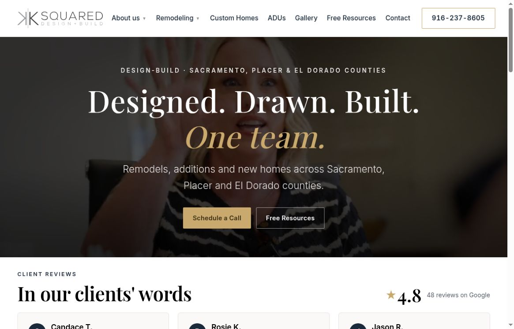
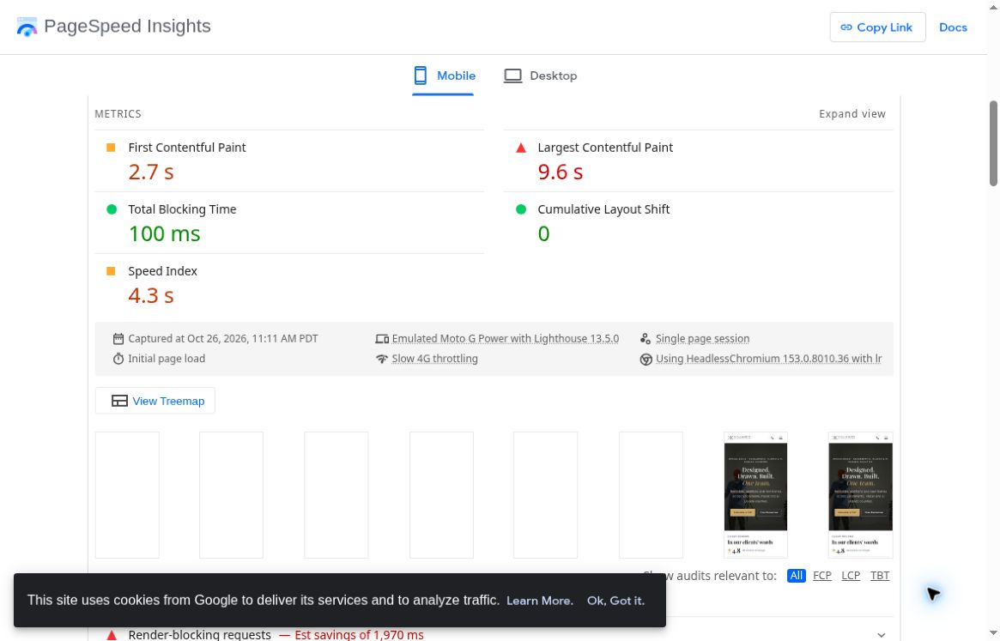
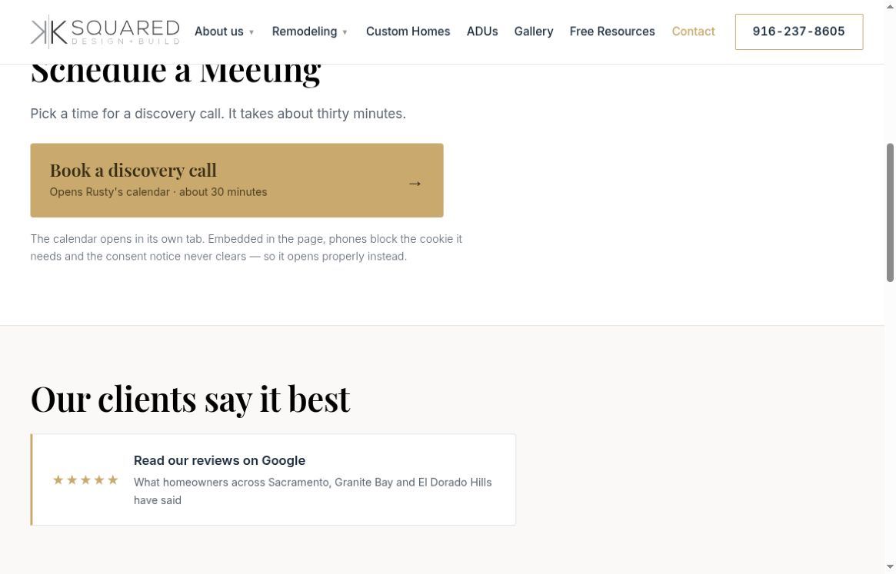
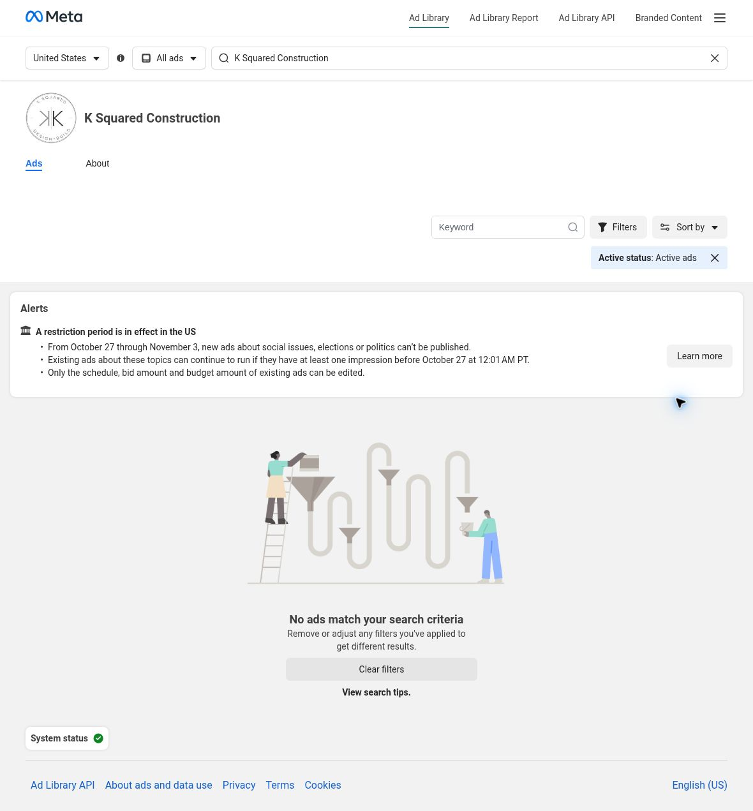

Local Meta ads
Reach nearby people on Facebook and Instagram.
A custom audit / K Squared
We’re Vessel Archive, a local Sacramento marketing team.
A short plan for K Squared Construction.
Reach nearby people on Facebook and Instagram.
Real videos, photos and clear messages.
Get found through your Google Business Profile, site and blogs.
What you do well
Your project stories give homeowners useful detail.
Keep that strong foundation. Make the next step faster.
See your website ↗
What we found
The phone test took 9.6 seconds to show its largest visible item. People on slower connections may leave before seeing the work. One slow-4G lab test, not every visitor. Desktop showed 0.8 seconds. View source ↗

Schedule a Call first opens Contact. A second link opens the calendar. A direct route would help homeowners who already know they want to talk. Homepage → Contact → calendar. Calendar worked; this is a shorter-path opportunity, not a broken booking claim. View source ↗

Your matched Meta page showed no active U.S. ads. A small local test could put your existing project stories in front of new homeowners. October 27; this page and these filters only. Not proof of no advertising elsewhere. View source ↗

How we would help
Resize the first image, reduce code that delays it, and retest on a phone connection. Keep the strong project stories.
Link the main scheduling button to the working calendar. Keep Contact for phone, email and office details.
Use a real project or planning video in a small local Meta test. Compare qualified calls, not likes alone.
Ideas for your next shoot
Show how plans, selections and a fixed scope help homeowners know what comes next.
Walk through a real design choice from the primary suite project and why it worked.
Let Rusty explain the discovery call and the questions homeowners can bring.
A proposed starting plan / 1 of 2
We’d script, shoot and test the first local ads within the first couple of weeks, alongside a focused website refresh and clear brand direction.
We’d compare which videos and audiences bring useful discovery calls, improve the landing page and build on the strongest messages.
Proposed timing depends on agreed scope, access and approvals.
A proposed starting plan / 2 of 2
We’d film more real project stories, refresh the ads and improve the route from first visit to a booked call.
Each month: shoot, launch, learn and improve.
Proposed timing depends on agreed scope, access and approvals.
From one local team to another

Whether we work together or not, we hope this helps. We love seeing Sacramento-area businesses do well. If you’d like, we can talk through the next step.